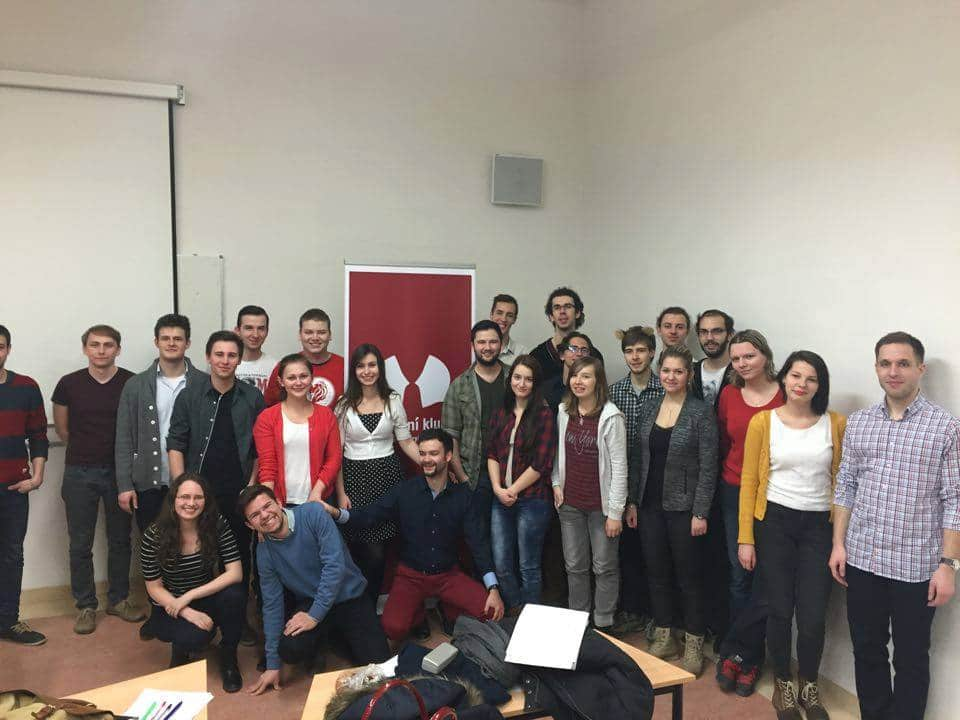

Jdeme s dobou a sociálním sítím se nevyhýbáme.
Facebook fanpageNejlépe uděláš, když se za námi přijdeš podívat a my ti už všechno potřebné řekneme a ukážeme. Schůzky probíhají jarním semestru 2018:
Úterý, 19:00, Fakulta sociálních studií MU, místnost U34 (3. patro)
Čtvrtek, 19:00, Fakulta sociálních studií MU, místnost U34 (3. patro)
Těšíme se na tebe!
